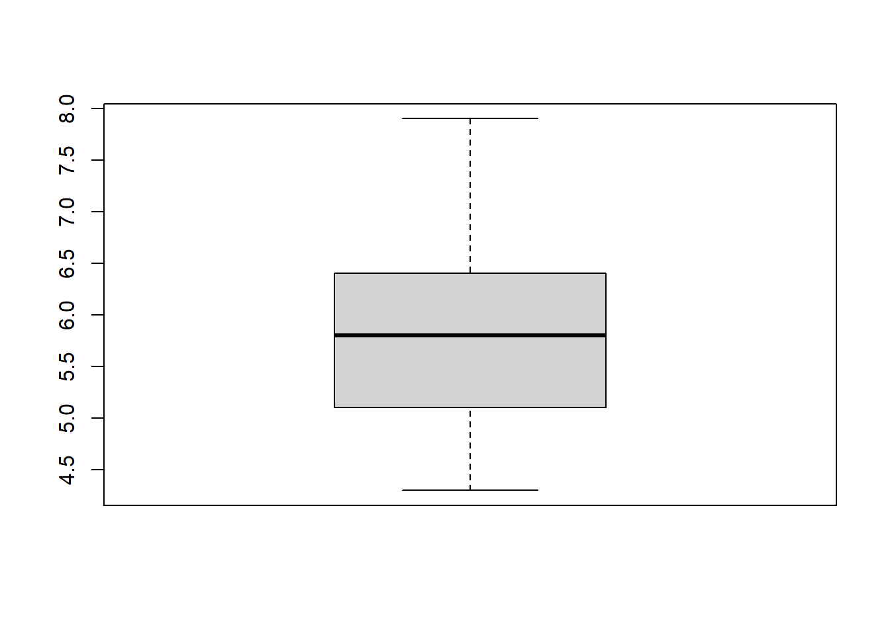
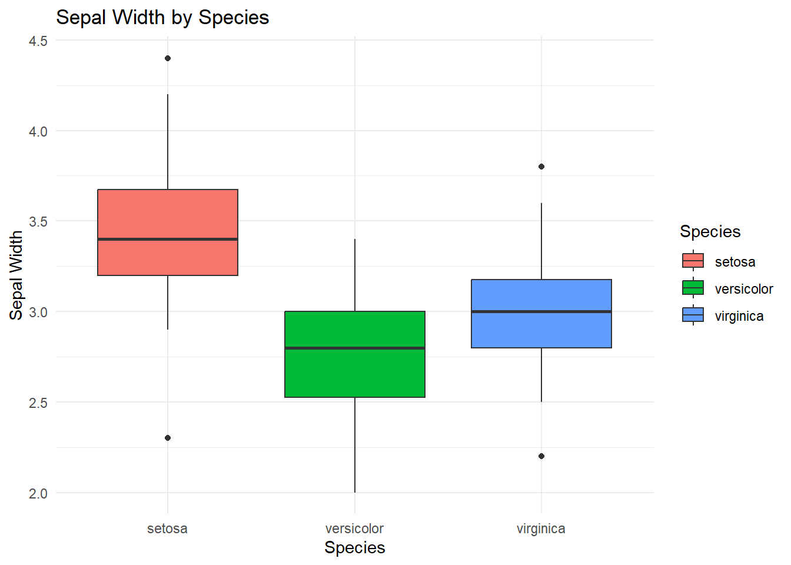

15 Everything you need to know before you learn R
If you are completely new to R, you are in the right place.
Learning R can feel intimidating at first. Unlike software such as Excel and SPSS, R asks you to type instructions to tell the computer what you want it to do rather than clicking icons and menus.
The good news is that you do not need to be a programmer to learn R. You just need to learn a few basic ideas, practise them, and gradually build up your understanding.
This document is not intended to teach you R - rather, it should help you get started and highlight the key concepts to know before you try to learn R.
By the end, you should understand:
- What R is
- The difference between R and Rstudio
- Some advantages and disadvantages of R versus other software
- Main parts of the RStudio interface
- How to begin coding in R
- Where to find help and learning materials
- How to continue learning R independently
👍 The most important thing to remember:
You do not need to understand everything before you start. Learning R is a process.
15.1 What is R?
R is a programming language. That means that instead of telling R what to do by clicking buttons in a menu, you generally type instructions.
For example, you can ask R to calculate 2+2
2 + 2and it will return:
#> [1] 4We’ll get to where you type these instructions soon!
R is widely used for statistics, data analysis and data visualisation. It is used by students, researchers, universities, governments, businesses and many other organisations.
R is especially useful when you need to:
- Work with data
- Perform calculations
- Carry out statistical analyses
- Create graphs and visualisations
- Manipulate datasets
15.1.1 What is RStudio?
You will often hear people talk about R and RStudio as though they are the same thing.
They are not.
R is the programming language itself. It is the thing that actually performs your calculations, analyses and commands.
RStudio is an Integrated Development Environment (IDE) for R. A fancy term for a user dashboard. It provides a convenient interface for working with R.
💡 Think of it this way:
If R is the engine, RStudio is the dashboard that makes the engine easier to use.
You can use R without RStudio, but RStudio provides a much more convenient environment for writing, running and organising R code.
When you are getting started, you will normally install both R and RStudio.
15.1.2 Why learn R?
There are lots of reasons to learn R.
15.1.2.1 It’s free!
One of the biggest advantages of R is that it is free. You do not need to buy a licence to continue using R after you graduate and there are no limits to how many devices you install it on.
15.1.2.2 It’s flexible!
R can be used for an enormous range of tasks from calculating statistics, plotting data, statistical analysis, hypothesis tests, regression, automating tasks, writing reports and much more.
15.1.2.3 It’s widely used!
R is widely used in scientific research and academia, as well as industry. R has an enormous library of packages to help you perform even quite specific tasks.
Packages are collections of additional functions, data and other resources that extend what R can do.
ℹ️ R can do a huge amount. And if it cannot already do something you need, there is often a package that can help — or you can potentially create your own solution.
15.1.3 The downsides of R
R is powerful, but there are some things that can make it difficult to use when you first start. The main thing being that you have to interact with it as a programming language.
If you are used to software where you select options from menus, R may initially feel unfamiliar and there will be quite a lot to learn.
Before being proficient in R, you will need to learn:
- How R understands commands
- What objects are
- How functions work
- How to structure your code
- How to find and fix errors
This can feel daunting at first but is completely normal.
The first few sessions of learning R are often the hardest because you are learning a new way of communicating with a computer, but with a bit of practise, you’ll soon get the hang of it.
In software such as Excel, to plot a graph you might:
- select some cells;
- click insert;
- select the chart type you want;
- click OK.
In R, you might instead type something like:
boxplot(my_data)and get a plot such as

15.2 Installing R and RStudio
The University of Sheffield MASH R resources page contains a guide to downloading and setting up both R and RStudio. Section ?? of this book, Downloading R and RStudio, contains a guide to downloading and setting up both R and RStudio.
Alternatively, go to both the R and RStudio webpages and download the appropriate version for your device.
@ -143,120 +143,6 @@ Alternatively, go to both the R and [RStudio](htt ⚠️ It is important that you download both R and RStudio. :::
15.3 Getting to know RStudio
When you open RStudio, you will probably see several different sections or panes.
The exact arrangement can vary depending on your version and settings.
A common layout contains four main panes:
- (Top-left) Source
- (Bottom-left) Console
- (Top-right) Environment / History
- (Bottom-left) Files / Plots / Packages / Help
15.3.1 1. Source
The Source pane is where you can write, edit and save your code. If it is the first time opening Rstudio, the Source pane may not appear until you click the following.
File > New File > R Script
The Source pane is where you should normally develop your analysis. The saved code is referred to as a script and has the file extension .R. These files can be reopened and worked on at any time.
15.3.2 2. Console
The Console is where R receives and executes commands.
You can type directly into it. The result will appear underneath. Unlike an R script, the Console is temporary and anything you type into it is not saved. The Console is particularly useful for:
- Trying out commands
- Testing ideas
- Checking the result of a function
- Troubleshooting
👍 Tip: You can press the Up key with your cursor in the Console to quickly cycle through commands you have typed recently
15.3.3 3. Environment / History
The Environment pane shows objects that currently exist in your R session. Objects are bits of information R can store and work with, we’ll cover these in more detail later in this chapter.
For example, if you run the code:
student_scores <- c(65, 72, 81, 69, 88)the object student_scores will appear in the Environment. We’ll talk more about objects later.
The Environment therefore gives you a useful overview of the objects you have created.
There are other tabs within this pane, the next most useful being the History tab which shows all the commands that you have previously entered.
This can be useful when you are trying to remember something you did earlier in your session.
Below we’ll learn how we write code, create objects and perform functions with our objects.
15.3.4 4. Files / Plots / Packages / Help
The last window contains several tabs including Files, Plots, Packages and Help.
The Files tab allows you to navigate through folders on your computer (see Working Directories for more detail).
Plots displays graphs that you create in R.
Packages allows you to see packages that are installed in your R session.
Help displays R’s documentation when you request it using the ? command (see Errors for further help).
The following table summarises the pane functions.
| Window | What it does |
|---|---|
| Source | Write and edit R scripts |
| Console | Run R commands |
| Environment | View objects currently stored in R |
| History | View previously entered commands |
| Files | Navigate through files and folders |
| Plots | View graphs |
| Packages | Install and manage packages |
| Help | Access R documentation |
15.3.5 Working directories
One concept that often causes confusion when you first start using R is the working directory.
The working directory is the folder that R is currently using as its default location for reading and writing files.
You can find your current working directory by running:
getwd()getwd() means get working directory.
You can change the working directory using setwd() and the path to your desired folder. For example:
setwd("C:/Users/YourName/Documents/R")The exact path will depend on your computer.
ℹ️ You do not necessarily need to use setwd(). Instead, in the Files tab, click … on the right-hand side, click through the file explorer to find the folder you want then click Open. Click the cog symbol titled More then Select Set as Working Directory.
15.4 Learning how to write code
There are a few things that are worth understanding right at the beginning. @ -634,97 +520,6 @@ Understanding the concepts of coding are fundamental in providing solutions to p
Not only this, for some university assessments, the use of AI may not be tolerated at all, so it is good to check that you are using AI in a way that is honest, fair and responsible. Thorough guidance on the use of AI at The University of Sheffield can be found on the StudySkills@Sheffield webpage.
15.5 MASH support
There are lots of ways to learn R, and you do not have to learn it alone. Here at MASH, we offer friendly and specialist support from workshops to 1:1 sessions to suit your needs. Here are the main ways we can support you.
15.5.1 MASH workshops
MASH runs workshops covering statistics, mathematics and software skills.
R workshops are a great way to learn alongside other students and ask questions as you go.
We offer R workshops for ultra-beginners. These are designed for people who want to learn R from the very basics, without any prior knowledge - excellent if you have never coded before.
We also have more bespoke R workshops such as
- MASH workshop: Using R for data visualisation
- MASH workshop: Using R for hypothesis testing
- MASH workshop: Using R for regression
You can find and book workshops on the MASH workshops booking calendar
15.5.2 MASH online resources
The MASH First steps in R resources are designed to help you get started from the beginning, providing videos and help pages for getting started with R.
15.5.3 MASH 1-1 support
You can also book a 1-1 appointment with MASH.
A 1:1 can be particularly useful if you have a specific question about:
- A research problem
- How to implement a statistical method
- R code that is not working
- Interpreting your output
You can book a 1-1 appointment on the MASH statistics 1-1 appointment booking page
15.6 Where to go next
Once you have mastered the basics, there are lots of other resources you can use to continue learning.
15.6.1 YaRrr! The Pirate’s Guide to R
YaRrr! The Pirate’s Guide to R is a clear, free online textbook.
It provides an accessible introduction to R and includes examples that you can work through yourself.
15.6.2 R for Data Science
R for Data Science by Hadley Wickham is a great guide for importing, wrangling, manipulating and visualising data.
15.6.3 Learn R by example
Learn R by example is an easily to follow website organised around examples.
It covers topics ranging from basic R syntax through data structures, functions, data import, graphics and more.
15.6.4 Swirl
Swirl is a package for learning R interactively within RStudio.
Instead of reading instructions on a webpage and then switching between your browser and RStudio, Swirl gives you interactive lessons directly in R.
Begin by installing the swirl package.
Type the following command into the Console:
install.packages("swirl")Wait for the installation to finish.
Once the installation is complete, load the package:
Then start Swirl by typing:
swirl()Swirl will begin interacting with you. Simply read the instructions on the screen and enter your responses.
15.7 Step-by-step process for learning R
Important: There is no single “correct” way to learn R.
@ -829,7 +624,7 @@ boxplot( )
<img src="01_EYNTKBYLR_files/figure-html/unnamed-chunk-36-1.png" alt="" width="672" />
<img src="01_EYNTKBYLR_files/figure-html/unnamed-chunk-30-1.png" alt="" width="672" />
**Step 6** - Develop it
@ -854,7 +649,7 @@ ggplot(iris, aes(x = Species, y = Sepal.Width, fill = Species)) +
theme_minimal()

15.8 Final advice
@ -874,55 +669,3 @@ You just need to keep building your knowledge. ::: {.success-box} 👍 Start small. Practise often. Don’t be afraid of errors. Ask for help. :::
15.10 Glossary
| Term | Brief description |
|---|---|
| R | A programming language used for statistics, data analysis and data visualisation. |
| RStudio | An Integrated Development Environment (IDE) that provides an interface for working with R. |
| Command | An instruction given to R to perform an action. |
| Function | A piece of code designed to perform a particular task. |
| Argument | Information supplied to a function that tells it what to work with or how to behave. |
| Object | Something that R can store and work with, such as a number, text or vector. |
| Assignment | The process of storing a value in an object, commonly using <-. |
| Package | A collection of additional functions, data and resources that extends R’s capabilities. |
| Script | A saved file containing R code, usually with the .R file extension. |
| Console | The RStudio pane where R commands are entered and executed. |
| Source | The RStudio pane where you write, edit and save R scripts. |
| Environment | The RStudio pane showing objects currently stored in your R session. |
| History | An RStudio tab showing commands previously entered during your session. |
| Working directory | The folder R uses as its default location for reading and writing files. |
| Comment | Text beginning with # that R ignores when executing code. |
| Debugging | The process of finding and fixing problems in code. |
| Error | A message from R indicating that something has gone wrong when running code. |
| Warning | A message from R indicating that something may not have worked as expected. |